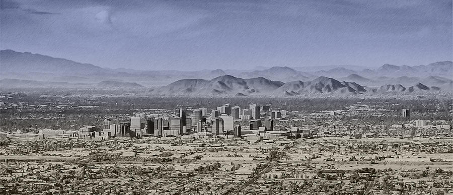

Phoenix Metropolitan Area

The Phoenix Metropolitan Area also the Valley of the Sun, the Salt River Valley, or Metro Phoenix (known by most locals simply as “the Valley”)
is the largest metropolitan area in the Southwestern United States, centered on the city of Phoenix, that includes much of the central part of Arizona.
The United States Office of Management and Budget designates the area as the Phoenix-Mesa-Scottsdale Metropolitan Statistical Area (MSA), defining it as
Maricopa and Pinal counties. As of the 2020 census, Metro Phoenix had 4,845,832 residents, making it the 11th largest metropolitan area in the nation by
population. It anchors the Arizona Sun Corridor megaregion along with the second most populous metropolitan area in the state, the Tucson metropolitan
area. The gross domestic product of the Phoenix Metropolitan Area was $255 billion in 2018, 16th largest amongst metro areas in the United States.
| Cities and Suburbs Population |
| City Name |
Population |
Founded |
| Phoenix |
1,608,139 |
1868 |
| Mesa |
504,258 |
1878 |
| Chandler |
275,987 |
1912 |
| Gilbert |
267,918 |
1920 |
| Glendale |
248,325 |
1910 |
| Scottsdale |
241,361 |
1951 |
| Peoria |
190,985 |
1954 |
| Tempe |
180,587 |
1892 |
| Data from Wikipedia 06/2022 |